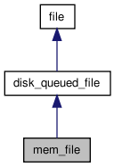

Implementation of file based on new[] and memcpy. More...
#include <mem_file.h>
Inheritance diagram for mem_file:

Collaboration diagram for mem_file:

Public Member Functions | |
| mem_file (int queue_id=DEFAULT_QUEUE, int allocator_id=NO_ALLOCATOR) | |
| constructs file object | |
| void | serve (const request *req) throw (io_error) |
| offset_type | size () |
| Returns size of the file. | |
| void | set_size (offset_type newsize) |
| void | lock () |
| Locks file for reading and writing (acquires a lock in the file system). | |
| void | discard (offset_type offset, offset_type size) |
| const char * | io_type () const |
| Identifies the type of I/O implementation. | |
Detailed Description
Implementation of file based on new[] and memcpy.
Constructor & Destructor Documentation
| mem_file::mem_file | ( | int | queue_id = DEFAULT_QUEUE, |
|
| int | allocator_id = NO_ALLOCATOR | |||
| ) | [inline] |
constructs file object
- Parameters:
-
disk disk(file) identifier
Member Function Documentation
| const char * mem_file::io_type | ( | ) | const [virtual] |
Identifies the type of I/O implementation.
- Returns:
- pointer to null terminated string of characters, containing the name of I/O implementation
Reimplemented from file.
| void mem_file::lock | ( | ) | [virtual] |
Locks file for reading and writing (acquires a lock in the file system).
Implements file.
| file::offset_type mem_file::size | ( | ) | [virtual] |
The documentation for this class was generated from the following files:
- mem_file.h
- mem_file.cpp